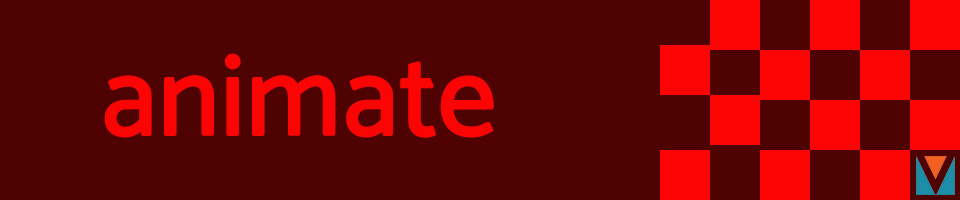

Home | Photoshop | Illustrator | Time Base Media | InDesign | Contact
I put a lot of time and effort into this final animation project, at the end I was very disappointed because the result was not what I was expecting, although I guess the short story I was trying to achieve was kind of interesting. I submitted it just because I had to, but I didn’tlike this project at all. However I know this is part of the learning process.